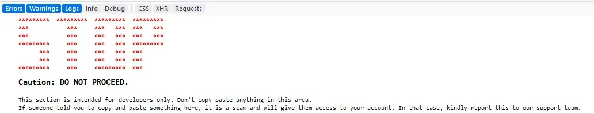

SXW.js
SXW.js is an open-source javascript library that is used to display console warnings to users aginst Self XSS attacks.

Download via
Demo
The sxw.js displaying a warning in the console as shown in the picture below.

Open the console on this page to view a sample of the XSS warning displayed.
Usage
Using npm
-
Install the npm package using
npm i @sxwjs/sxwjs
- Import sxwjs module
-
Call the required function inside sxwjs module
import sxwjs from '@sxwjs/sxwjs';
...
...
sxwjs.printWarning();
Using js file directly
- Include the sxw.js file in your website.
- The script will register built-in functions into "window.sxwjs" object.
- At the end of the html document call the printWarning function in "window.sxwjs" as shown in the
sample code.
<script>
window.sxwjs.printWarning();
</script>
Using nuget
- Install the nuget package
- Include the sxw.js file from the content folder into your website.
- At the end of the HTML document call the printWarning function in window.sxwjs similar to the one mentioned
above.
Customizations
Sections
The warning displayed in console contains three sections.
- A huge STOP sign
- A caution text in bold
- A detailed message saying that this section is intented for developers only. It also warns aginst copy
pasting
content in the console.
Configuration
SXW.js has a config object with the following variables,
| Variable name |
Default value |
Description |
| stopColor |
red |
The colour of the stop sign |
| warningText |
This section is intended for developers only … … |
The detailed error message |
These variable can be customized to suit your website needs.
Functions
There are three functions in the library that will be available into the sxwjs object.
- printStop - Prints just the huge stop sign
- printWarningText - Prints the caution sign and the detailed error message
- printWarning - prints all the three sections
None of these functions are called by default. You can choose to call them as you wish.
Credits & Thanks
Contributors
- Kolappan Nathan
- Shivaraj Naidu
Services used
We thank the following services for providing free services to Open Source Projects,
- Github for free code hosting and free website using GitHub
pages.
- js.org for providing subdomain under js.org.
- Shields.io for those beatutiful status icons.
- Azure Devops for free CI/CD.
GitHub bots
- ImgBot - Automatic ocmpression of our images
- Pull - Automatically update forked repos
- The logo and other images are created using Adobe Spark.